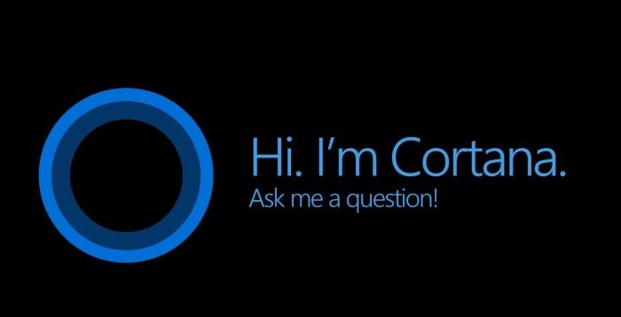
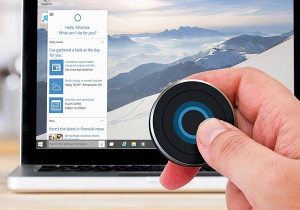

História da Cortana
Cortana é uma assistente virtual inteligente do sistema operacional Windows 10 disponível em base opt-in. O seu nome vem da Cortana, personagem de inteligência artificial da franquia Halo, com Jen Taylor, dubladora da personagem, regressando a sua voz na assistente pessoal.
Surgimento da Cortana
A Cortana começou a ser desenvolvida em 2009 pela equipe de produtos da Microsoft juntamente com o gerente
Zig Serafin e o cientista Larry Heck.
Os dois estabeleceram a visão, missão e o plano de desenvolvimento de longo prazo da assistente virtual. Para desenvolverem a Cortana, a equipe entrevistou vários assistentes pessoais reais para inspiração.
→ Inicialmente, o nome Cortana foi criado provisoriamente apenas como código interno.
No entanto, após uma petição dos fãs, chegou-se à conclusão de que o nome era muito popular e acabou sendo adotado oficialmente.
Assistente Virtual
Lançada como um ingrediente-chave da planejada "reforma" da Microsoft dos futuros sistemas operacionais para Windows Phone, Windows e Xbox One.
Em 21 de janeiro de 2015, a Microsoft anunciou a chegada da Cortana para os computadores com o Windows 10.
Espero que tenha gostado do conteúdo! Esse site foi desenvolvido para aplicar meus estudos de HTML5 e CSS3.